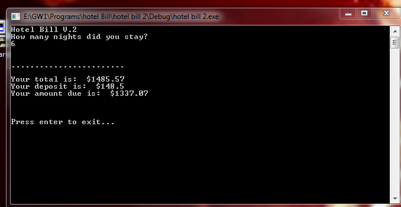

This image shows you the BMI Calculator 2 after it has been ran. I picked this one because it was the most challenging for me personally, and I am very proud of it because it helped me grow as a programmer and expand my skills. If I revisited this I would probably change how the program restarted. I would add a line of code that would clear the information for the last time it was successfully run. To download the BMI Calculator 2 please click here.
This image shows the Hotel Bill Calculator 2 after it has been ran successfully. I picked this C++ program because it helped me realize that code isn't just all ones and zeros. It helped me better understand code and its importance. I did have trouble with this one because of the many calculations needed to make this program work correctly. But in the end I was able to figure out the right calculations. I am proud of this C++ code because of how my skills grew after I completed it. If I revisited it I would probably add a graphic or include some sort of design. To download this C++ program please click here.